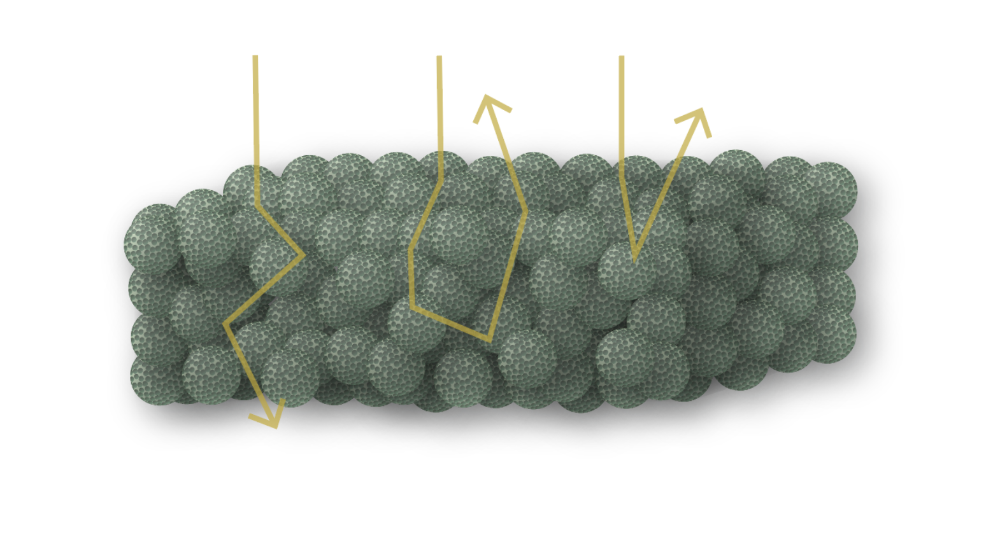

Light scattering in hierarchical disordered structures
Photonic balls—microscopic spheres containing nanoparticle or nanopore assemblies—offer way to create pigments with vibrant, angle-independent structural colors. These particles can be dispersed in liquids, making them ideal for applications like paints and coatings. Dispersions or films of photonic balls can be seen as hierarchical structures, with nanostructures inside the spheres and then packings of these spheres. These two scales of structure lead to two scales of light scattering behavior. Inside the photonic balls, light scatters differently than it does between them. To predict colors from these structures and capture both scales of scattering, we developed a multiscale model that simulates light scattering at both the individual sphere and film levels. Our findings reveal that photonic balls scatter light differently than homogeneous nanostructures, often reducing color saturation. Using predictions from our model validated with data, we demonstrate that a solution to this reduction in saturation is to embed absorbers within the spheres and refine surface roughness. These findings unlock new design possibilities for structural color materials.
Selected works:
AB Stephenson, M Xiao, V Hwang, L Qu, PA Odorisio, M Burke, K Task, T Deisenroth, S Barkley, RH Darji, VN Manoharan. Predicting the Structural Colors of Films of Disordered Photonic Balls. ACS Photonics 2022, acsphotonics.2c00892.